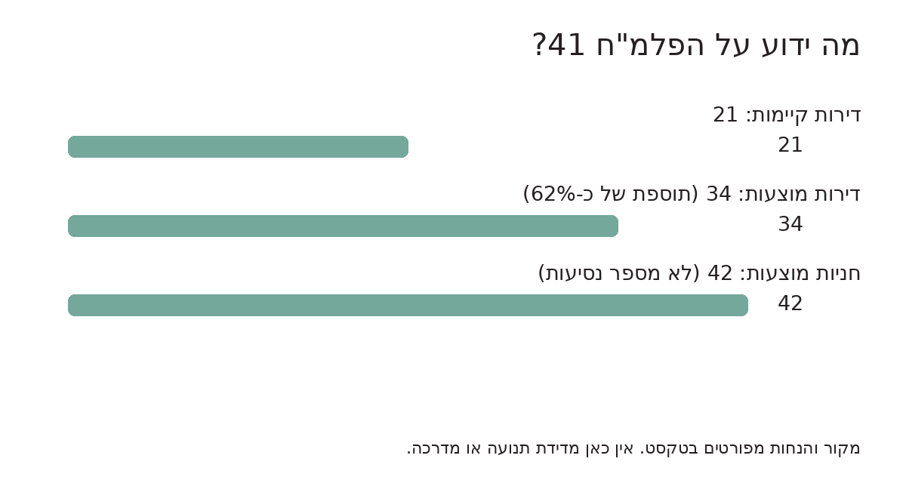
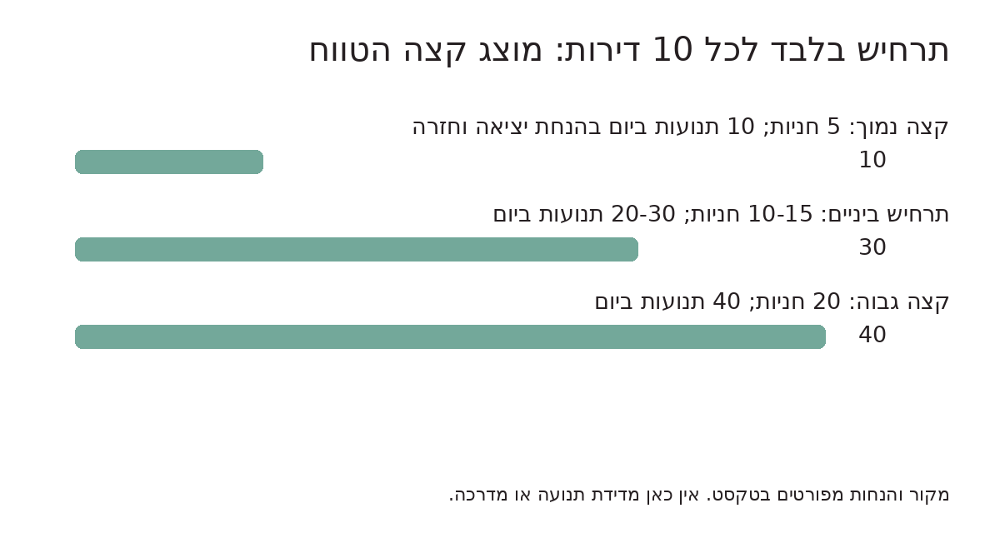
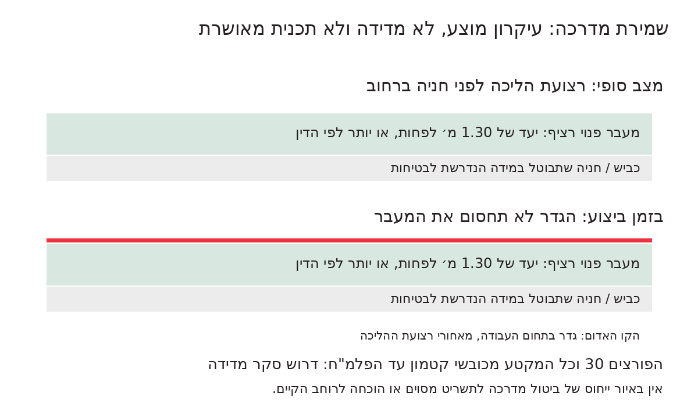
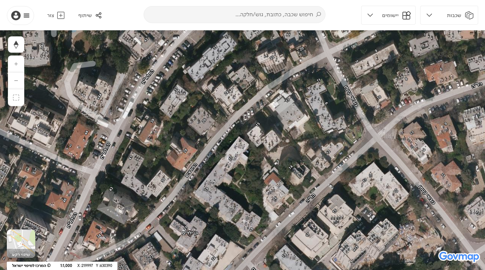
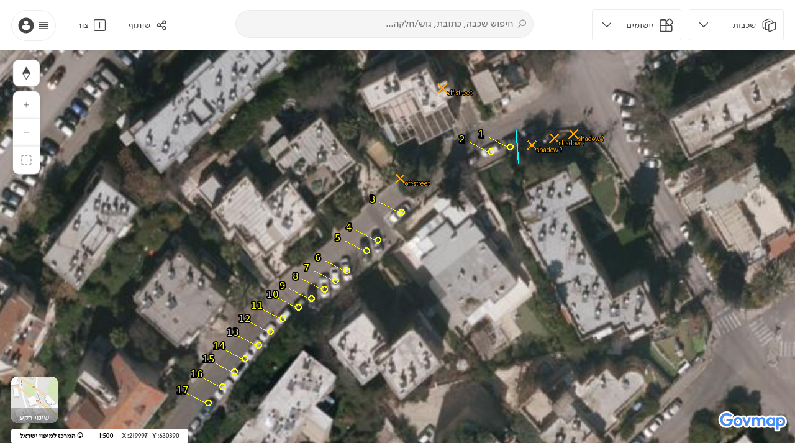
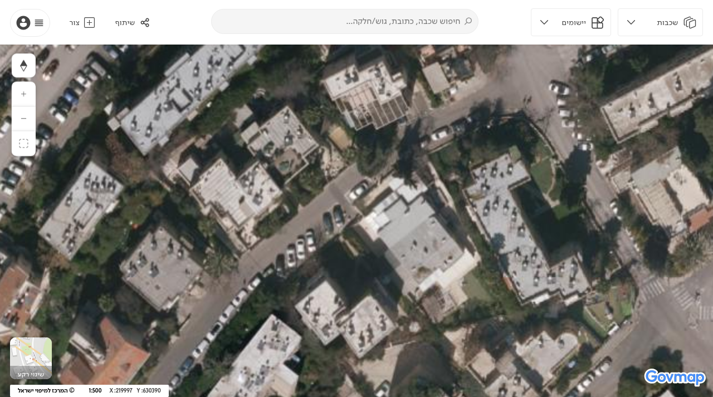
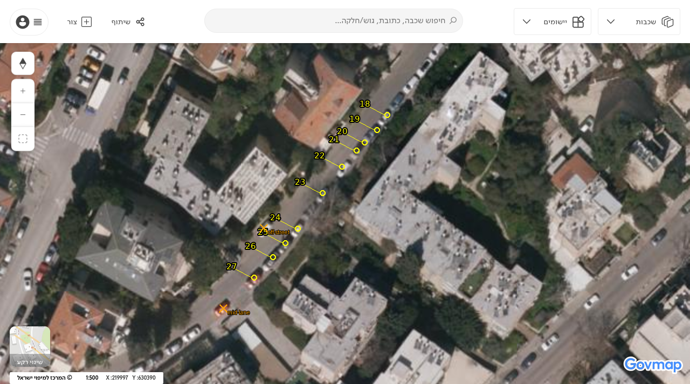
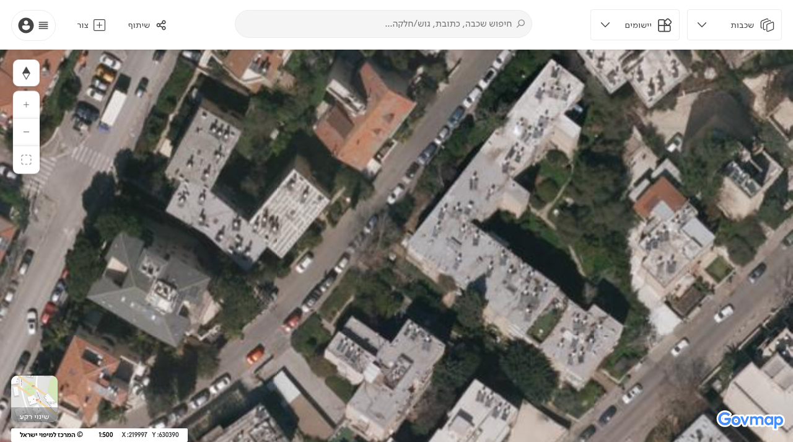
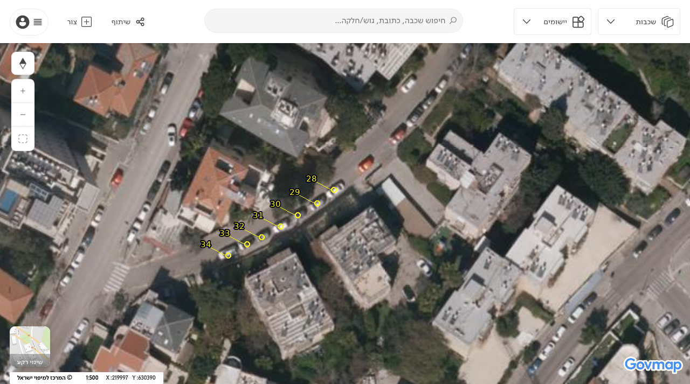
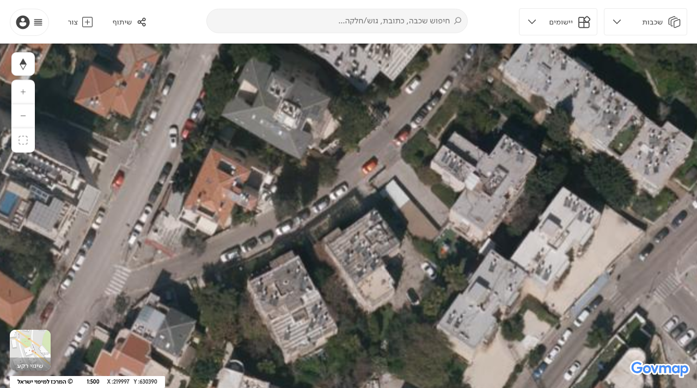

טיוטה לעיון, 30.10.2026. לא הוגשה. אין זה ייעוץ משפטי או חוות דעת של מהנדס תנועה. פרטי המתנגד וחתימתו יתווספו רק בעותק הפרטי להגשה. המסמך עוסק בתנועה, בהולכי רגל ובשלבי ביצוע בלבד; אין בו טענות בדבר חריגות מתכנית האב.
לכבוד הוועדה המקומית לתכנון ולבנייה ירושלים,
מבוקש לדחות את ההקלות ואת הבקשה במתכונתה הנוכחית, ולא לאשר את תוספת העומס התחבורתי לפני שהובטח פתרון רציף, בטוח ונגיש להולכי רגל ברחוב הפורצים, מכובשי קטמון ועד הפלמ"ח. אין להסתפק בתיקון נקודתי בחזית הבניין או בהבטחה להסדרה לאחר האכלוס. נדרשים תכנון מאושר, תקציב, אחריות ולוח ביצוע לכל המקטע, וביצוע ההסדר הבטיחותי לפני יצירת העומס הנוסף. אם מסגרת היתר זה אינה מאפשרת לחייב את מלוא העבודות, אין בכך הצדקה לאשר עומס נוסף לפני שהרשות הציגה פתרון ישים במסגרת סמכויותיה.
במסמכי הבקשה מוצעים 42 מקומות חניה ו-34 דירות במקום 21 קיימות. בתכנית הפיתוח מופיעה רמפת חניון מהפורצים. זהו מוקד של חציות מדרכה בידי כלי רכב, נוסף לתנועת הרחוב, עם סיכוני ראות ומפגש עם הולכי רגל.
השוואת סדר גודל של כלי הרכב הפוטנציאליים הקשורים למקטע: בספירה חדשה שנערכה ב-30.10.2026 על תצלום האוויר משנת 2025, מהפורצים 20 עד הפלמ"ח, סומנו 34 כלי רכב חונים נראים/סבירים. טווח רגישות עבודה: 33-38, לא רווח סמך סטטיסטי; הקצה העליון מאפשר גם פרשנות רחבה יותר לתחילת המקטע מול מספר 20. מול אומדן זה מוצעות 42 חניות בבקשה. בתרחיש ברוטו שבו כולן מייצגות כלי רכב נוספים, 34+42=76, כלומר פי 2.24 בקירוב. זו המחשת החשש להכפלה בקירוב של כלי הרכב החונים/המשתמשים ברחוב, לא טענה שנמדדה הכפלת זרימת התנועה.
מקור: מפ"י/Govmap, שכבת orto2025me_update; יום הטיסה המדויק לא ידוע. מצורפים שלושה צילומי מסך מקוריים חופפים בקנה מידה 1:500, גרסאות מסומנות ורשימת 34 מועמדים עם קואורדינטות פיקסל. כל רכב סומן פעם אחת בלבד; תצלום מאתר עם שמות רחובות ומספרי בתים מאמת את המקטע. מועמד 1 כהה ואינו ודאי, ו-23 מכוסה חלקית בעץ. צל וחופות עצים עלולים להסתיר נוספים. טווח הרגישות אינו מפקד של עצמים בלתי נראים. מכוניות בחניות פרטיות/כניסות ורכב כתום במרכז הנתיב לא נכללו; אין בכך קביעה שכל החונים שסומנו חונים כחוק.
הספירה החדשה נמוכה ב-3 מאומדן 37 שדווח ב-26.10.2026. אין זו ירידה בתפוסה בפועל, אלא קריאה חדשה של אותו תצלום 2025. אומדן העבר אינו מאומת מחדש, והנספח הישן בעל ההסתרות הוחלף בראיות המקור החדשות.
זו השוואת קיבולת גסה בלבד. חונים אינם נסיעות; החניון עשוי לקלוט גם כלי רכב שכיום חונים ברחוב, ואין הוכחה שכל 42 המקומות יוסיפו 42 מכוניות חדשות. לכן 76 הוא תרחיש ברוטו ולא תוספת נטו מוכחת. בטווח הרגישות 33-38 מתקבל יחס ברוטו של כ-2.11-2.27. הצילום מכסה רק את המקטע ממספר 20 עד הפלמ"ח, לא סקר רוחבים או תנועה לכל הרחוב. הגידול מ-21 ל-34 דירות הוא כ-62%, לא 100%.
נדרשות ספירות בשעות השיא וביום מייצג, נתוני תנועת מעבר, מוצא ויעד, שיעור תפוסת חניה ותנועת דיירים קיימת; תחזית כניסות ויציאות נטו, מיקום הכניסה הסופי, שדה ראייה, מפגש הרמפה עם המדרכה ותנועת רכבי שירות וחירום. יש להציג אישור תחבורתי עדכני. העדר נספח בחומר שנבדק אינו מוכיח שאישור אינו קיים בתיק המעודכן.
תכנית 101-1590439 ברחוב הפורצים 17-19 היא בשלב רעיון מוקדם להריסה ובנייה מחדש. אין בידינו מספר דירות מאומת, תקן חניה מסוים למגרש או תכנית כניסה לחניון. אין לייחס לה חניון מאושר או מועד מימוש.
לצורך בדיקת רגישות בלבד, תקנות החניה שפורסמו ב-2016 מציגות לבניין דירות רגיל טווחי 0.5-1 חניות לדירה באזור א', 1-1.5 באזור ב', ו-1-2 באזור ג'. סוג הדירות, הוראות התכנית, אזור המתע"ן והוראות המעבר עשויים לשנות את החישוב. לא אומתה תחולת אחד הטווחים על 17-19; אלה תרחישי השוואה ולא תקן שנקבע למגרש.
לכל 10 דירות עתידיות, הטווחים האלה משמעם 5-10, 10-15 או 10-20 חניות בהתאמה. בהנחה חשבונאית מפורשת שכל מקום תפוס מייצר יציאה אחת וחזרה אחת ביום, מדובר ב-10-20, 20-30 או 20-40 תנועות רכב ביום, בהתאמה. אין זה מקדם יצירת נסיעות מקצועי, תחזית שעת שיא או תוספת נטו לרחוב. לדוגמה בלבד, 30 דירות ו-1-1.5 חניות לדירה נותנות 30-45 חניות ו-60-90 תנועות ביום תחת אותה הנחה. המספר 30 אינו נתון של הפרויקט. בלי מספר הדירות הקיימות והעתידיות, תנועתן הקיימת ומיקום הכניסה, לא ניתן לחשב תוספת נטו אמינה.
מבוקש לכלול כל יוזמה רלוונטית בניתוח מצטבר, ולבחון כמה מהתנועה תעבור במקטע הצר. אסור להתייחס לכל חניון כאילו הוא פועל בחלל ריק, או להניח שכל כלי הרכב הנוספים יעברו בהכרח לכל אורך הרחוב.
המקטע לבחינה הוא כל הפורצים מכובשי קטמון ועד הפלמ"ח, בשני הצדדים ובמפגשי הרחובות. יש לבדוק היכן חסר רצף הליכה ברוחב פנוי של 1.30 מ' לפחות, ומהו הרוחב המחייב בכל קטע לפי הדין והתקן העדכניים. 1.30 מ' הוא יעד מינימום מבוקש, לא היתר לצמצם מקום שבו נדרש יותר.
לא צורף כאן סקר מדידה שמוכיח שכל הרחוב צר מ-1.30 מ'. בתצלומים ובחומר הקיים לא הוכחה רציפות תקינה; המסמך דורש שהוועדה תברר את החסר בסקר חתום, ולא תעביר את סיכון אי-הוודאות להולכי הרגל. הסקר יפרט רוחב פנוי נטו, קירות, עמודים, עצים, שיפועים, מדרגות, הנמכות וחסימות חניה. מפת אוויר וסכמות אינן תחליף למדידה.
יש להעדיף רצועת הליכה רציפה על שימור מקומות חניה לאורך הכביש, גם אם נדרש ביטול כל החניות ברחוב לצורך הפתרון. יש לבחון את החניונים בבניינים המתוכננים כמענה לחניית דייריהם, ולא כעילה להמשיך להפקיע את מרחב ההליכה לחניית מכוניות. חניות פרטיות אינן חניון ציבורי, ואין להבטיח שיחליפו את כלל חניות הרחוב או שישמשו מבקרים ללא הסדר מפורש.
מבוקש תנאי מפורש לשמירת המדרכה הקיימת באזור הפורצים 30 לאורך כל העבודות ובמצב הסופי. אין לצמצם את המעבר בשל גדר, חפירה, תמיכת דפנות, רמפה, רחבת כיבוי, אחסון או עבודות קבלן. אם הקטע אינו בחזית בקשה זו, יש להסדירו בתיאום רשות הדרך ולא לייחס לבקשה שינוי שלא הוכח בתכניתה.
טרם הוכח במסמך זה שתכנית מאושרת מבטלת את מדרכת הפורצים 30. זו דרישה למניעת פגיעה ולבירור בתשריט מאומת. דרוש חתך מצב קיים/מוצע בקנה מידה עם גבולות מגרש ודרך, רוחבי מעבר, מקום הגדר ועומק החפירה. אין להסתפק בתשריט שאינו מסמן רצף הולכי רגל.
במסמך מחלקת התכנון לבקשה זו נאמר במפורש: "רחבת כיבוי האש המוצעת אינה מקובלת, כיון שהיא יושבת על רצועת הגינון ומוצעת על המדרכה". נדרשת הצגת התיקון הסופי ואישורו, ולא הנחה שהבעיה נפתרה. החיתוכים המצורפים ממחישים את מקור הדרישה; הם אינם הוכחה לביטול מדרכה במספר 30 דווקא.
לפני התחלת עבודה יוגשו הסדרי תנועה ובטיחות זמניים חתומים: רצועת הליכה רציפה, נגישה ומוגנת שאינה נחסמת בגדר; תיאום כניסות משאיות ומעבר ברמפה; שילוט, תאורה, שדה ראייה והגנה מחפירה. הגדר תתוכנן בתוך גבולות העבודה בלי לפגוע במעבר. אם הדבר אינו אפשרי, נדרש פתרון חלופי נגיש ומוגן שאושר מראש, ולא הורדת הציבור לנתיב תנועה פעיל. יש לשמור על המדרכה עצמה ועל יציבותה, לתעד מצב מוקדם ולשקם כל פגיעה. מעבר לצדו השני של הרחוב אינו פתרון אוטומטי בלי מעברי חצייה נגישים ובטוחים.
[S1] הודעת סעיף 149 ותמלולה: ../../s149_notice_2026-0439.00.jpg ו-../../s149_notice_2026-0439.00.md (יחסית לתיקיית הסקירות). 21->34 יח"ד; מועד אחרון 13.11.2026. תאריך הדבקה בכתב יד: 19.10.2026. [S2] מחלקת התכנון, זיהוי תכנית, 15.2.2026, מסמך 11: https://jerarchivews.jerusalem.muni.il/api/items/16E57A23-0D2B-464C-ACAD-30895F07B87D . 21 קיימות, 34 מוצעות, 42 חניות, אישור תושי"ה נדרש והערת רחבת הכיבוי. עותק שנשמר בארכיון הפרויקט נבדק; זמינות המקור המקוון כעת לא אומתה. [S3] תכנית פיתוח, מסמך 21: https://jerarchivews.jerusalem.muni.il/api/items/CD4B97A9-3CD5-47AE-BA85-44DEA21CC34D . רינדורי חיתוכים בסקירה הציבורית הקיימת; מפלסים וקווים מהמקור, חלק מהתוויות עלולות להיות הפוכות ורכיבים גרפיים לא שוחזרו במלואם. [S4] 101-1590439, רשומה ומסגרת רעיון מוקדם: https://mavat.iplan.gov.il/SV4/1/1005536258/310 . אין בידינו תכנון מפורט מאומת; ראו גם הסקירה הציבורית באתר לתכנית זו. [S5] מינהל התכנון, הסבר תקנות חניה: http://www.gov.il/he/Departments/legalInfo/building_and_planning_parking_regulations . נבדק 30.10.2026; הדף עודכן ב-2017. נוסח התיקון ברשומות 7675, 23.6.2016, טבלה 1.2: https://olaw.org.il/takanot/takanot-7675.pdf . הטווחים מובאים לבדיקת רגישות בלבד; תחולה עדכנית למגרש טעונה אישור. [S6] עיריית תל אביב, הסבר נגישות רחובות: https://www.tel-aviv.gov.il/Residents/HealthAndSocial/Pages/Disabilities.aspx . מפרט רצועת הליכה פנויה של 130 ס"מ; מקור הסברי, לא קביעה בדבר הדין לכל קטע בירושלים. יש לבדוק תקן ודין עדכניים בידי מורשה נגישות. [S7] הסקירה הקיימת וחיתוכיה: ../review-2026-0439.00.html . ספירת התצ"א העדכנית לנספח זה מתוארת ב-S8; לא נערכה מדידת מדרכות.
[S8] מפ"י/Govmap: https://www.govmap.gov.il/?c=219997,630390&z=13 . תצלום 2025, ספירה חדשה 30.10.2026. שיטה, מקור וגבולות, רשימת מועמדים. שלוש תמונות מקור ושלוש מסומנות שמורות באותה תיקייה. האומדן 34 (רגישות 33-38) אינו ספירת נסיעות.




34 כלי רכב נראים/סבירים; רגישות 33-38. מספור רציף ללא כפילויות, לא ספירת תנועה. צהוב: נכלל; X כתום: הוצא או לא הוכרע; קו תכלת: תחילת המקטע בקירוב.






